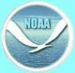
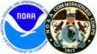
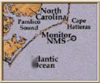
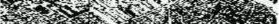

NOAA has been
around since the
1970's but many of the
line offices that make
up NOAA have been
around much longer.
NOAA Fisheries for
instance was created
on February 9, 1871,
when President Grant
signed a bill
recognizing a national
interest in fisheries
conservation by
creating the
independent Office of
Commissioner of Fish
and Fisheries, of which
NOAA Fisheries is a
direct descendant.
These organizations
have had a major
influence on the
development of our
country.




